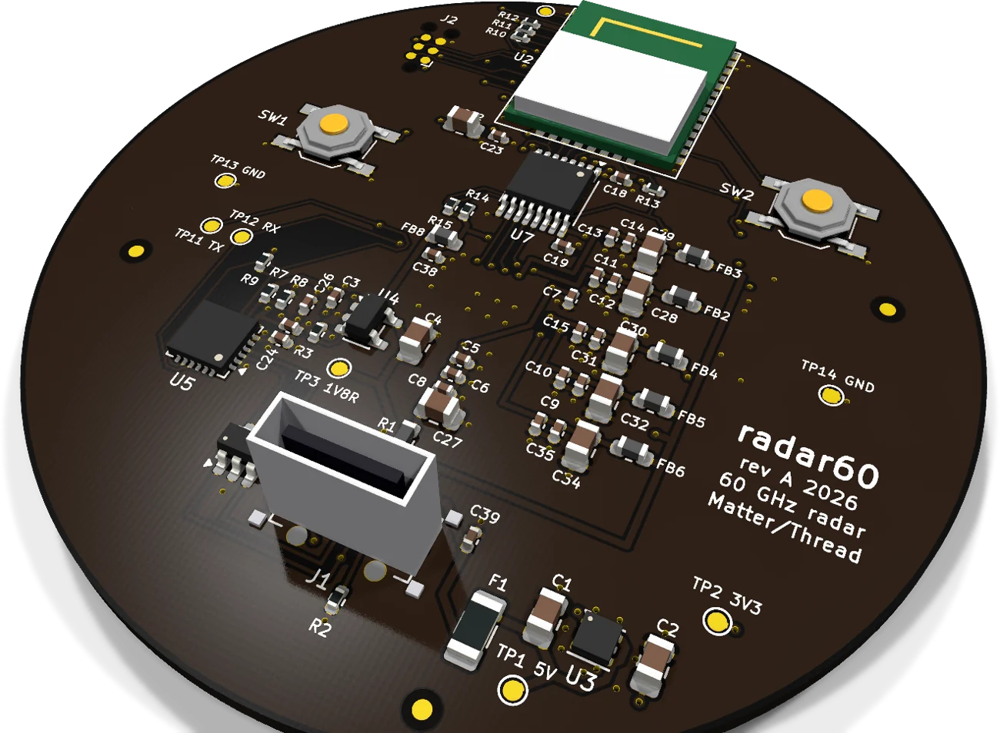
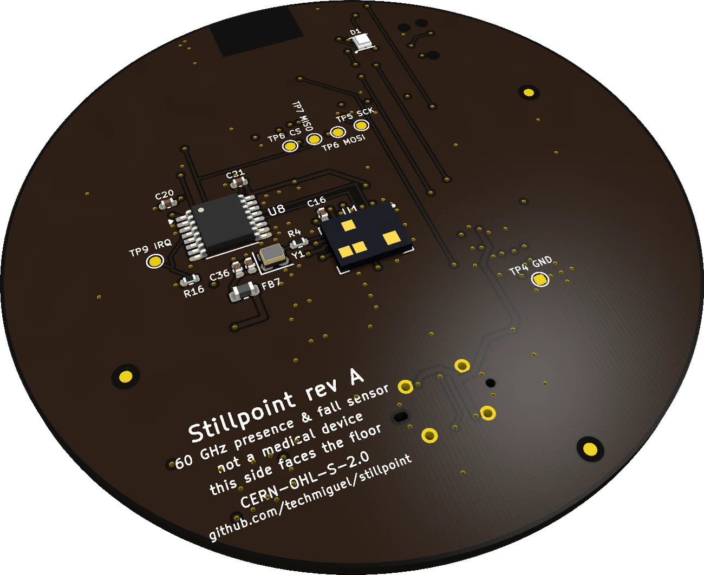

radar60 is a ceiling sensor with no camera and no microphone. A 60 GHz radar counts people, tracks where they are and how they stand, flags falls, and notices someone lying completely still by the movement of their chest.
Everything is computed on the board and reported over Matter. No cloud, no account, no images, ever.
Any free heypcb account can like a board once. Likes close on November 30.
The top face faces the ceiling and carries the brains and the power. The bottom face looks at the room through a radome tuned to half a wavelength at 60.6 GHz.

A B C D E F
G H I JInfineon asks for a solid ground right under the chip with no signal lines. Layer 2 is ground everywhere; layer 3 is the 3.3 V plane with a solid ground island cut in under the radar.
Each radar domain (RF, PLL, VCO, analog, digital, loop filter, oscillator) gets its own ferrite and capacitors in one straight 0.3 mm lane, smallest capacitor closest to the ball.
The radar's control balls alternate inputs and outputs, so one translator sits on each face and the SPI moved to the module's bottom pads. Every radar line runs straight.
The module sits centred on the edge with its 8.8 × 4.8 mm keep-out on all layers. A 60 mm ground plane is exactly the width Silicon Labs recommends for its built-in antenna.
The real board STEP goes into the FreeCAD case: 0 mm³ of interference with the shell, lid and clamp posts, and no material inside the ±60° field of view.
ERC and DRC clean, schematic and board in sync, critical pins compared against the datasheets, BOM and pick-and-place compared against the board before ordering.
The whole chain is written in portable C and tested on a PC against a Python reference, frame by frame.